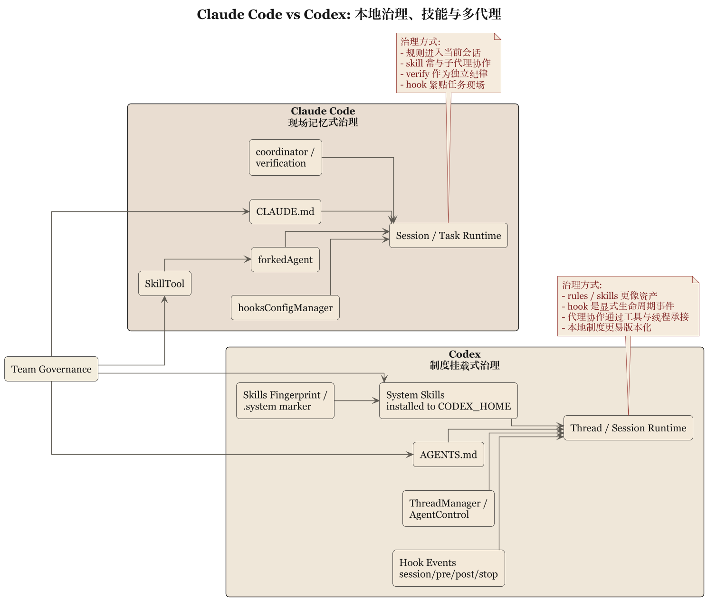

第 5 章 技能、Hook 与本地规则：系统如何学会守乡约

5.1 真正能落地的 agent，一定会地方化
任何一个通用 coding agent，只要真的开始给团队干活，就会遇到同一个问题：公司有公司的规矩，仓库有仓库的规矩，目录有目录的规矩，人还有人的怪脾气。系统要是不能吸收这些局部制度，就只能永远停留在演示环境里。
Claude Code 和 Codex 都给出了答案，只是方向不同。
5.2 Claude Code：把局部制度做成现场记忆
Claude Code 的地方化能力，很大一部分落在：
CLAUDE.md- skill
- hook
- session memory
这几样东西组合起来，有一种很强的“现场经验沉淀”味道。CLAUDE.md 告诉系统在这个仓库、这个目录、这个团队里什么算常识；skill 把某类工作流程打包；hook 把团队治理挂到生命周期节点上；session memory 则让当前工作不至于每轮都从头做人。
它们的共同特点，是都非常贴近任务现场。这里的重点在于让规则进入当前会话，参与当前执行，而不是先定义一套万古不变的组织制度。Claude Code 很像一个愿意随身带笔记本的工程师，走到哪就把当地规矩抄下来。
这种做法的好处，是非常实用。它适合多项目、多目录、多种局部约束并存的环境。坏处是，如果没有额外整理，知识容易以“现场补丁”的形式扩张。
5.3 Codex：把局部制度做成结构化注入和事件系统
Codex 也有 skill，也有本地规则，也有 hook，但气质明显更制度化。
先看 skill。codex-rs/skills/src/lib.rs 显示系统会把内置 system skills 安装到 CODEX_HOME/skills/.system，还会对 skill 资产做 hash/fingerprint。这个细节很说明问题，因为它表明 skill 在 Codex 里不只是临时读入的文本，而是“被安装、被管理、可追踪版本形态”的资产。
再看 AGENTS.md。这套机制在 Codex 中不只表示“读一份本地说明”，还伴随着作用域和 hierarchy 的讨论。也就是说，局部规则不只是内容，还带着位置关系。
最后看 hook。hooks/src/engine/mod.rs 里把 hook 事件明确拆成：
session_startpre_tool_usepost_tool_useuser_prompt_submitstop
而且每个 handler 都有 event_name、matcher、timeout、status message、source path、display order 等结构。这说明 Codex 的 hook 更接近显式生命周期事件系统，而不是“哪里方便就塞一个回调”。
5.4 Claude Code 偏经验收编，Codex 偏制度挂载
把两者放在一起看，差异就非常清楚了。
Claude Code 的本地治理，更接近把现场经验不断收编进主循环附近。它擅长让 agent 在当前上下文里迅速学会“这里怎么办事”。
Codex 的本地治理，则更接近把地方规则挂载到明确控制面与生命周期机制上。它擅长让规则不仅被读懂，还被分类、排序、安装和触发。
这就导致两者的团队感不同。
Claude Code 的团队感，像一个熟悉现场、懂得看气氛的老员工。
Codex 的团队感，像一个新来但制度意识极强的项目经理，先把规则贴出来，再开始协调人做事。
5.5 对组织可复制性的影响
这种差异最影响组织复制能力。
如果一个系统主要靠现场经验注入，它会更快地适应新仓库，也更容易在复杂局部语境里存活。但复制到更多团队时，往往需要额外整理，避免大家各写各的 CLAUDE.md、各做各的 skill，最后像各省自行印教材。
如果一个系统主要靠结构化注入和事件挂载，它在组织扩展上更有潜力。因为规则更容易被统一分发、版本化和审计。代价是学习成本更高，团队要先接受更多显式制度。
这是一种经典工程取舍：
- 越贴近现场，越有弹性
- 越制度化，越易复制
两者都不会自动给你幸福。真正决定结果的，是团队究竟需要哪一种稳定性。
5.6 本章结论
这一章的归纳可以写成：
Claude Code 更倾向于把局部治理做成现场记忆与运行时注入，Codex 更倾向于把局部治理做成结构化资产与生命周期事件系统。
这不是“都支持 skills 和 hooks”的同义反复。
差别在于，Claude Code 问的是“怎样让 agent 在这里干活更像本地人”，Codex 问的是“怎样让本地规则进入一套可管理的制度框架”。
下一章要看这两种系统在更高风险处如何分工：多代理、验证、持久状态和恢复。系统一旦开始让多个代理干活，光讲规矩还不够，还得讲责任分离。